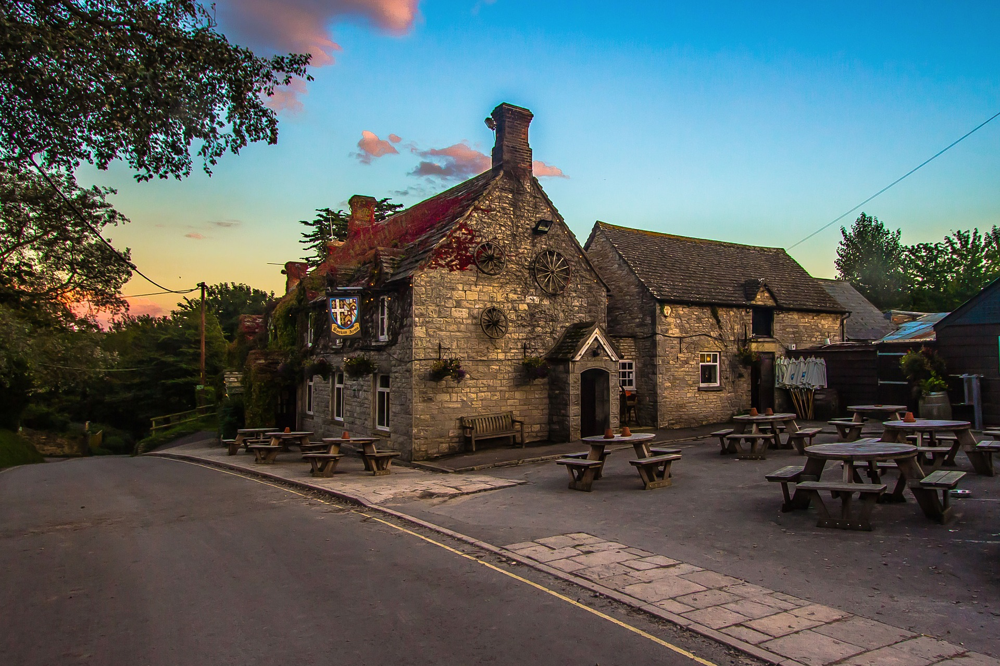
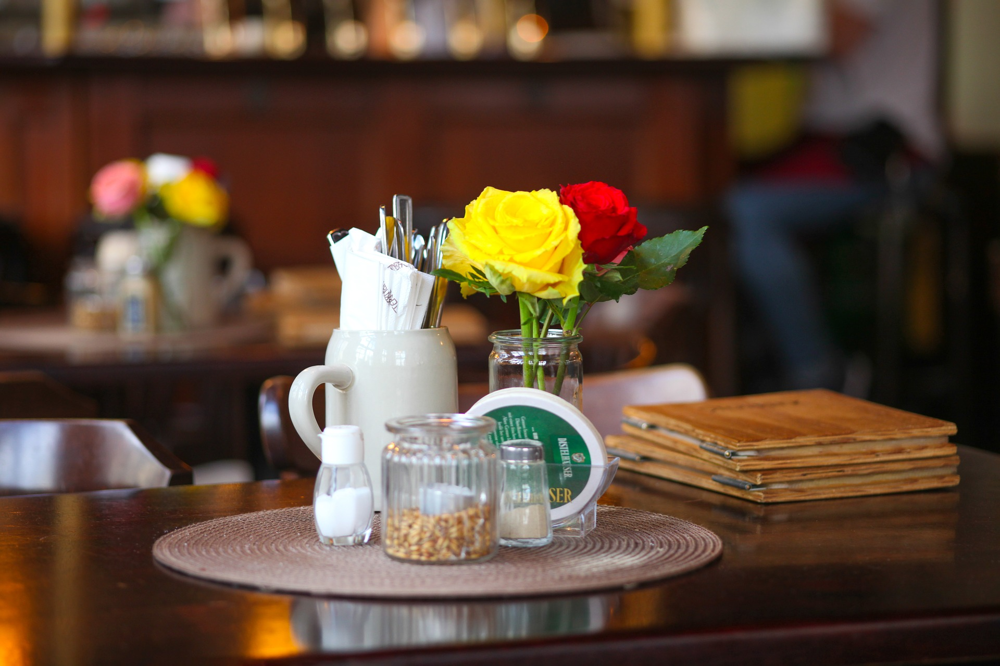

Our Story
The Galloping Goose was established in 1873 by my great grandmother, Manike. She inherited from her father a 23 acre apple orchard and his prized goose Gertude at the age of 16. In the begiingin she would sell cider and pies on the edge of town to the villagers. Eventually she saved enough to turn the farmhouse at the end of her land into The Galloping Goose.
Drinks
Specialty
- Galloping Goose Cider
- The Sidecar
- Cognac, orange liqueur and lemon juice.
- Pimm's Iced Tea
- Chill brewed orange pekoe tea, fresh lemon juice, Pimm's No. 1 and agave nectar.
Beers
- Belhaven Scottish Stout
- Harvey's Imperial Extra Double Stout
- Morland Old Speckled Hen
- Wychwood Hobgolin
- Fuller's London Porter
- Lovibonds Lagerboy
- Carling
- Worthington White Shield
- Bateman's Rosey Nosey
Dinner
- Fish and Chips £8
- Bangers and Mash £7
- Sausages and mashed potato, with peas and gravy.
- Toad in the Hole £7
- Sausages in Yorkshire pudding batter served with gravy and vegetables.
- Sunday Roast £10
- Roasted beef, roast potato, Yorkshire pudding, stuffing, vegetables (roasted: parsnips, Brussels sprouts, peas, carrots, and broccoli) and gravy.
- Shepard's Pie £9
- Ground lamb cooked with vegetables and Guinness for an extra flavor boost, then topped with fluffy mashed potato and baked.



Dessert
- Apple Cake
Slim, moist cake made with apples from our own orchard, that is served warm with a dollop of fresh cream.
- Apple Pie
Classic apple pie served hot with custard sauce.
- Apple Crumble
The crumble is made with Bramley apples and served fresh from the oven with clotted cream.
- Spotted Dick
Tender steamed pudding dotted with succulent black currants is drizzled with a luxuriously rich and creamy vanilla custard.
- Eton Mess
Crunchy meringue, whipped cream and fresh strawberry sauce with a splash of ginger cordial adds a twist to this classic dessert.